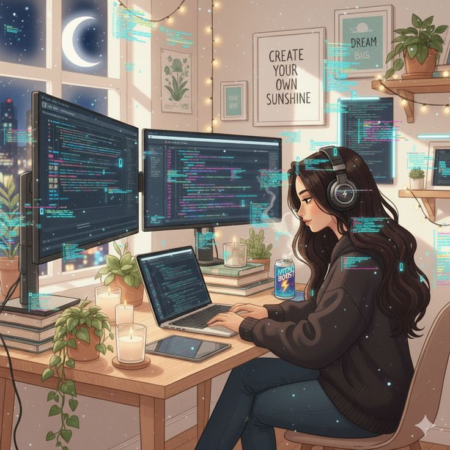

Pasa el mouse
Soy una persona expresiva y auténtica, que valora la conexión con los demás y la forma en que se comunica y comparte con su entorno. Busco desenvolverme con naturalidad en lo que hago, manteniendo un equilibrio entre lo personal y lo social. Me caracterizo por tener una manera clara de expresarme y por darle importancia a la convivencia, procurando siempre desenvolverme de una forma genuina y cercana con quienes me rodean.
Ver gustos
Mis gustos se centran en actividades que combinan lo físico, lo mental y lo creativo. Disfruto mucho la gimnasia por lo dinámica que es, así como armar cubos Rubik, ya que me entretiene y me reta a pensar. También me encanta leer, especialmente géneros como romance, fantasía, romantasy y dark romance, porque me gustan las historias originales que mezclan emociones con mundos imaginarios y personajes con los que se puede conectar. Además, disfruto compartir con mis amigos, por ejemplo haciendo lives, ya que es una forma de pasarla bien, expresarme y convivir de una manera más cercana.
Ver formación
Actualmente me encuentro aprendiendo y desarrollando habilidades en HTML y CSS, fortaleciendo mis conocimientos en la creación y diseño de páginas web. Previamente, he trabajado con pseudocódigo, Python, metodologías Scrum y Python aplicado con inteligencia artificial, lo que me ha permitido construir una base sólida en lógica de programación y desarrollo tecnológico. A corto plazo, tengo como objetivo iniciar mi aprendizaje en JavaScript para complementar mis conocimientos y avanzar hacia un desarrollo web más completo y dinámico.
Ver áreas
Mi enfoque principal está en la ciberseguridad, especialmente en el área de SOC (Security Operations Center), donde me interesa el análisis de malware, la respuesta a incidentes y la implementación de prácticas de desarrollo web seguro para contribuir a entornos digitales más protegidos. Asimismo, me atrae mucho el mundo del desarrollo Full Stack, ya que me permite comprender y trabajar tanto en el frontend como en el backend, integrando seguridad y funcionalidad en soluciones tecnológicas completas.